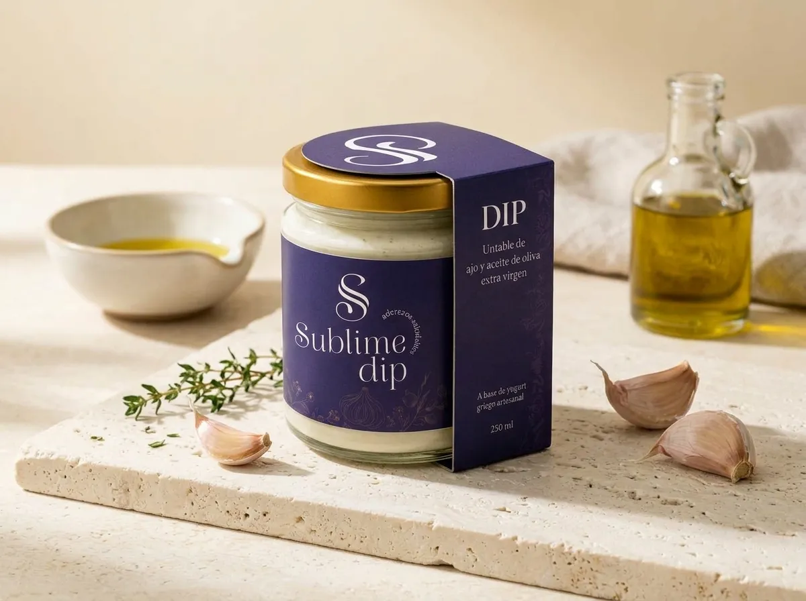
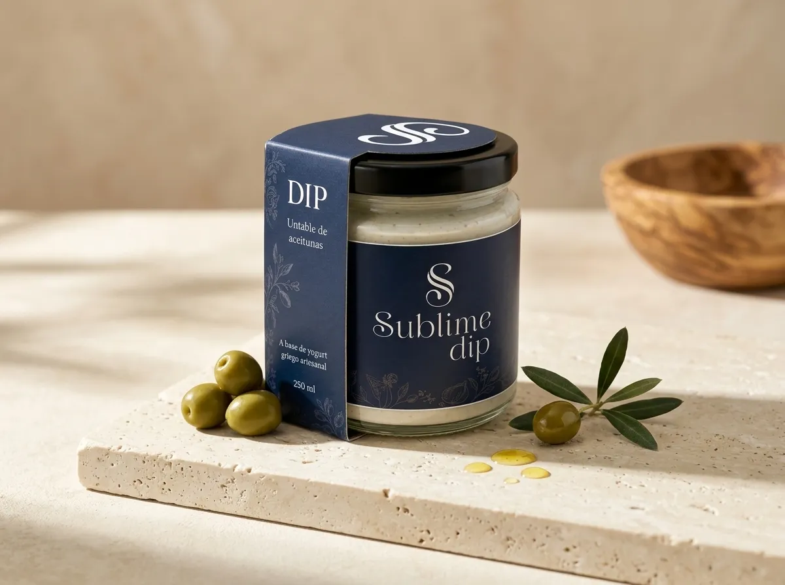

01
Ajo & Aceite de Oliva
Una combinación cremosa de yogurt griego artesanal, ajo y aceite de oliva extra virgen, con un sabor intenso y equilibrado.
ARTESANAL · NATURAL · GOURMET
Dips elaborados con yogurt griego artesanal e ingredientes seleccionados para disfrutar en cualquier momento.

NUESTROS DIPS
Elaborados con yogurt griego artesanal e ingredientes seleccionados.

01
Una combinación cremosa de yogurt griego artesanal, ajo y aceite de oliva extra virgen, con un sabor intenso y equilibrado.

02
Aceitunas seleccionadas combinadas con la cremosidad del yogurt griego artesanal para crear un sabor fresco y sofisticado.
¿POR QUÉ SUBLIME?
Elaborados con yogurt griego artesanal e ingredientes seleccionados.
Una propuesta enfocada en frescura, sabor auténtico e ingredientes simples.
Cada dip busca conservar el carácter casero y cuidado de una producción artesanal.
Aperitivos, snacks, reuniones, ensaladas o acompañamientos para tus platos favoritos.
NUESTRA ESENCIA
Sublime Dip nace con una idea simple: crear dips artesanales que combinen sabor, frescura y calidad en cada frasco.
Trabajamos con yogurt griego artesanal e ingredientes seleccionados para ofrecer una experiencia gourmet que puedas disfrutar de forma práctica y versátil.
CÓMO DISFRUTARLO
Acompaña pan, vegetales, galletas o tus snacks favoritos.
Una opción práctica para reuniones, picnics y momentos entre amigos.
Úsalo como acompañamiento para ensaladas, vegetales y platos principales.
SUBLIME PARA NEGOCIOS
Creamos oportunidades de colaboración para restaurantes, cafés, caterings, tiendas gourmet y negocios que buscan ofrecer una opción artesanal y diferente a sus clientes.
Hablemos de una alianzaIDEAL PARA
Restaurantes & cafés
Catering & eventos
Tiendas gourmet
Distribución & ventas por volumen
¿LISTO PARA PROBARLO?
Escríbenos por WhatsApp para conocer disponibilidad, sabores y opciones de pedido.
Pedir por WhatsApp